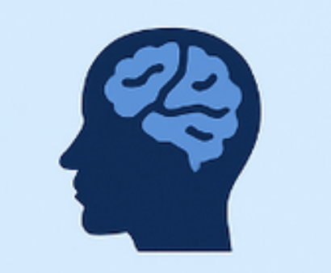
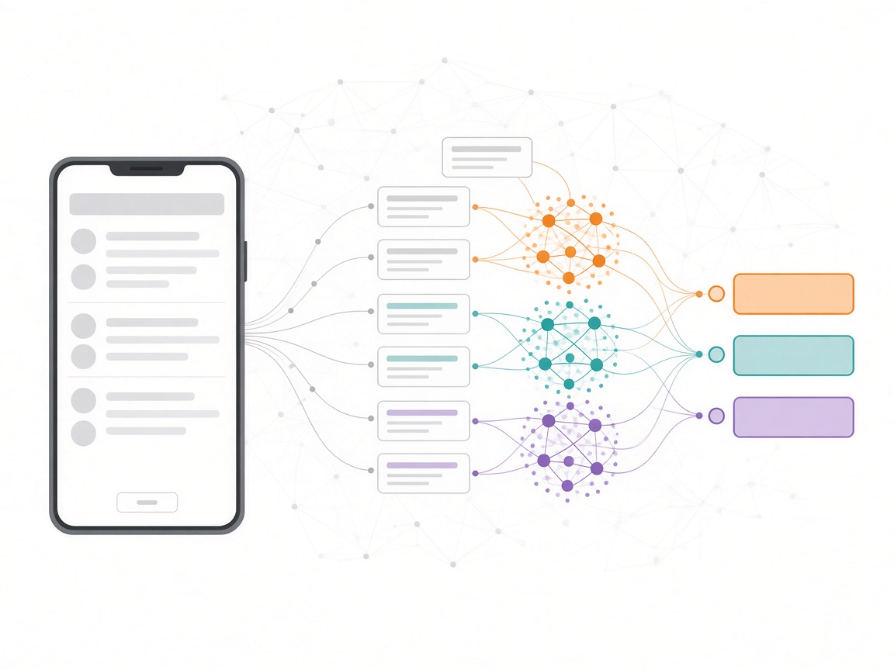
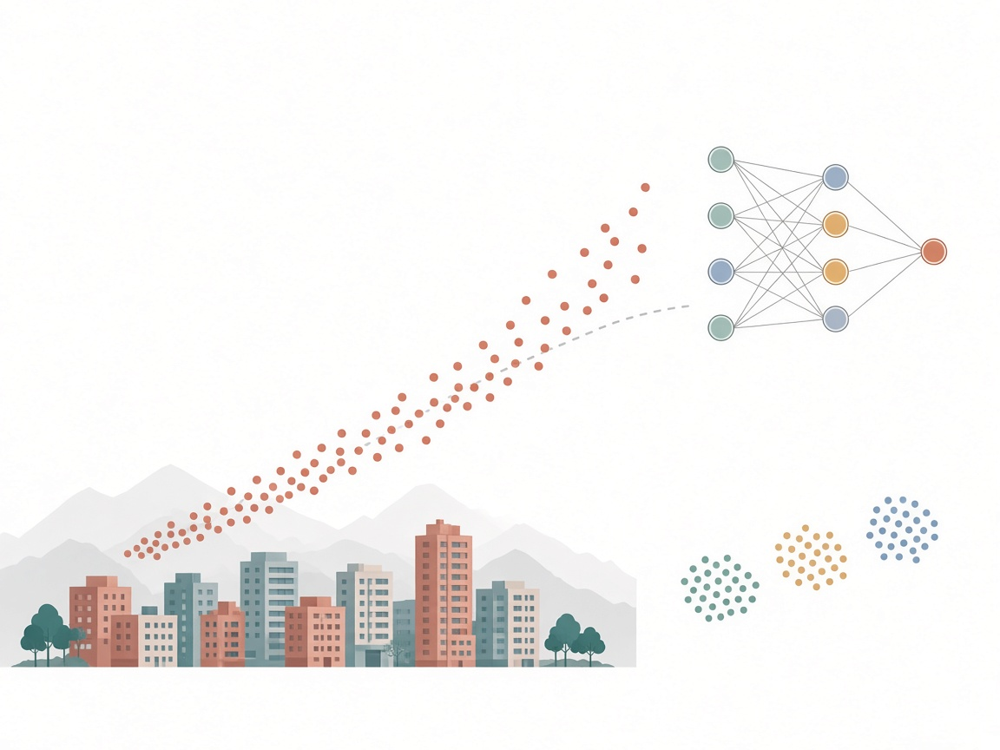

|
Shima Rezai
I am a computer engineering researcher working at the intersection of NLP, large language models, and AI for mental health.
I recently completed my M.Sc. in Algorithms & Complexity at Sharif University of Technology, where I was advised by Abbas Heydarnoori.
I previously earned my B.Sc. in Software Engineering at Yazd University, ranking first in my cohort.
My work spans LLM-based systems, computational modeling of cognition, and applied machine learning.
Email /
CV /
LinkedIn /
Github
|
|
|
Research Assistant
2022-2025
|
Intelligent Software Engineering Laboratory
Sharif University of Technology, Tehran, Iran
Supervised by Dr. Abbas Heydarnoori
Working with LLMs, Deep Learning, and ML algorithms for software engineering applications. Focus on detecting and prioritizing user concerns in mobile apps through NLP and machine learning approaches.
|
|
Data Analyst
2024-2025
|
Hizha Pharma Co. Ltd
Conducted biomedical data cleaning, visualization, and machine learning model development using Python, SQL, and Power BI to support pharmaceutical decision-making and data-driven insights.
|
Research
I am interested in NLP, large language models, generative AI, machine learning, deep learning, and explainable AI, with a focus on computational linguistics, cognitive science, mental health, and computational modeling.
Much of my work uses LLMs and NLP to model language and cognition—from detecting user concerns in software to mapping thought patterns in depression.
Selected projects are highlighted.
|
|
|
Identifying Thought Patterns in Major Depressive Disorder Using Variational Inference and Large Language
Models Integrated with Concept Space
Mariam Marlen Mirström,
Mohammad-Hossein Heidari Beni,
Shima Rezai
Proceedings of the 19th Swedish Cognitive Science Society Conference (SweCog), Stockholm 2024
project page
/
paper
This project explores how concept formation is disrupted in individuals with Major Depressive Disorder (MDD), leading to negatively biased and incoherent
conceptual networks. Using advanced LLMs and NLP tools integrated into real-time dialogue systems, we developed methods to dynamically map
cognitive shifts and semantic patterns. The approach enables comparative modeling between MDD and healthy individuals, with the goal of identifying
predictive cognitive markers and linguistic signatures. This work contributes to personalized mental health diagnostics and has direct implications for AI-
driven clinical decision support systems.
|
|

|
AI FOR MENTAL HEALTH: Bridging Language and brain via synthetic data
Shima Rezai,
Mahsa Zolfaghari
IEEE Women in Engineering International Leadership Summit (WIE ILS), 2025, University of West London
project page
/
paper
Developed an AI-driven framework using LLMs for continuous, personalised mental-health monitoring, enabling early detection of depression, anxiety, and
cognitive decline through longitudinal linguistic analysis with explainable and privacy-preserving methods.
|
|

|
Detecting and Prioritizing User Concerns in Mobile Apps
Shima Rezai,
Abbas Heydarnoori
Master's Thesis, 2025, Sharif University of Technology
abstract
Master’s thesis project focused on improving the identification and prioritization of user concerns in mobile app development by integrating feedback from
app stores and issue-tracking systems. Leveraged LLMs, NLP models (BART, BERT, GPT), deep learning (PyTorch), and ML algorithms (TensorFlow) under
the supervision of Dr. Abbas Heydarnoori. The evaluation process included three stages: concern detection, prioritization, and impact assessment of new
features.
|
|
|
Persian Empathetic Mental Health Chatbot
Shima Rezai
2025, Sharif University of Technology
code
Proposed a Persian mental health chatbot for depression and anxiety support using ParsBERT for emotion analysis, BART with RLHF for empathetic response generation, and mixed real/synthetic datasets to improve model performance and cultural relevance.
|
|
|
Persian Legal Assistant System (RAG + LLM)
Shima Rezai,
Arash Alikhani,
Ehsaneddin Asgari
NLP Course Project, 2024, Sharif University of Technology
paper
Built a Persian legal question-answering system with GPT-3.5 and retrieval-augmented generation over legal documents.
Compared embeddings from OpenAI, LaBSE, and fastText to retrieve relevant passages, and evaluated answer quality on held-out legal queries.
|
|

|
Tehran Home Price Prediction
Shima Rezai,
Mohammad Reza Pajoohan
B.Sc. Final Project graded 20/20, 2022, Yazd University
code
Predicted Tehran housing prices with a data-mining and machine-learning pipeline in Python, combining clustering and neural networks, and served the model through a Flask web app.
|
|
|
Fake News Detection
Shima Rezai
NLP Course Project, 2024, Sharif University of Technology
code
Text classification model using TF-IDF and Logistic Regression to detect fake news, achieving over 99% accuracy on the dataset.
|
|
|
Social Media Analysis
Shima Rezai
NLP Course Project, 2024, Sharif University of Technology
code
Data preprocessing, sentiment analysis, and visualization using Google API, Pandas, and Seaborn to extract insights from social media data.
|
|
|
PleaGen Language Model
Shima Rezai
2025
code
NLP-based language model for plea generation with advanced data preprocessing and analysis on large datasets, achieving 78% accuracy.
|
|
|
Persian Intent Recognition and Slot Filling
Shima Rezai
NLP Course Project, 2024, Sharif University of Technology
code
Persian intent recognition and slot filling system using the MASSIVE (fa-IR) dataset and transformer-based sequence labeling.
|
|
|
Sentiment Analysis of Nearpod App
Shima Rezai
2023, Staffordshire University, London
code
Data cleaning and analysis, word cloud generation, correlation matrix analysis, unsupervised models (LDA, COREX), sentiment and thematic analysis to extract insights, resulting in 40% rise in app satisfaction.
|
|
Honors & Awards
|
Ranked FIRST in Bachelor's GPA among a cohort of 90 students, 2022
Accepted in first ranked university in Iran with Direct admission of exceptional talents from Bachelor's to Master's program , 2022
Ranked 300 Among More Than 144000 High School Students in the Nationwide University Entrance Examination, Math and Physics Group, 2018
|
|
Academic Service
|
SANER 2024 Conference CO-REVIEWER, 2024
Editor-in-Chief of the Scientific Journal of the Faculty of Computer Engineering at Yazd University, 2021
Technical committee member at Quera Java programming and algorithmic thinking course mentoring Students , 2021
Executive Board Member of Bitok, Scientific Association of Yazd University, 2021
|
|
Teaching Assistance
|
Designing Algorithms - Dr. Mohammad Ali Abam
Data Structures - Dr. Mohammad Ali Abam
Deep Learning - Dr. Hamid Beigy
Operating Systems Lab (two times) - Dr. Hamid Beigy
AI & Data Science & Operating Systems - Dr. Mahsa Zolfaghari
Fundamentals of Programming - Python, Dr. Majid Nikzar
|
|
IT & Programming Skills
|
Languages: Python (Advanced), Java, C++, MATLAB, SQL
Libraries & Tools: PyTorch, TensorFlow, Keras, OpenCV, Hugging Face, Scikit-learn, Transformers, Pandas, Power BI
Core Skills: Machine Learning, Deep Learning, Multimodal Learning, Generative AI, Biomedical AI, Signal & Image Processing,
LLM Fine-Tuning, Data Mining, Data Preprocessing
NLP & LLMs: Topic Modeling, Summarization, Concept Extraction, Sentiment Analysis, BERT, BART, GPT, RAG/QA Pipelines,
embeddings (OpenAI, LaBSE, fastText), RLHF
Programming Concepts: OOP, Functional Programming, Design Patterns
|
Template is from Jon Barron's website.
|
|